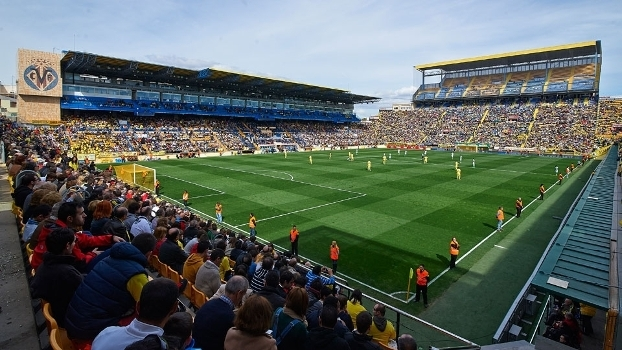
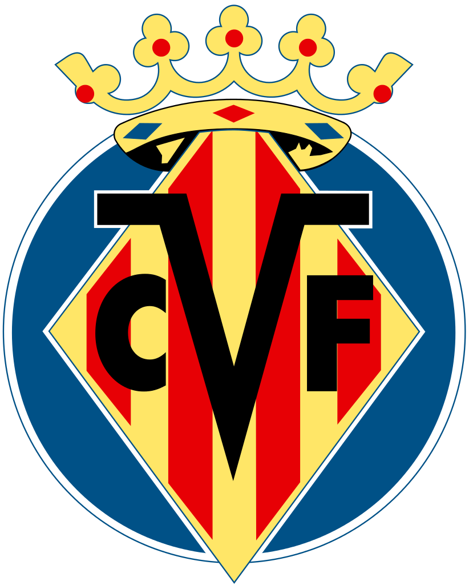

| Hist�ria do Time | Est�dio | Escudo do time | T�tulos | Jogadores, Titulares e Reservas | O Villa Real Club de F�tbol, tamb�m conhecido como submarino amarelo, � um clube de futebol espanhol, da cidade de Villarreal, na Prov�ncia de Castell�n. |
 |  | Ta�a Intertoto Tercera Divisi�n |
Sergio Asenjo Mariano Barbosa Andr�s Fern�ndez Mario Gaspar Jos� �ngel |